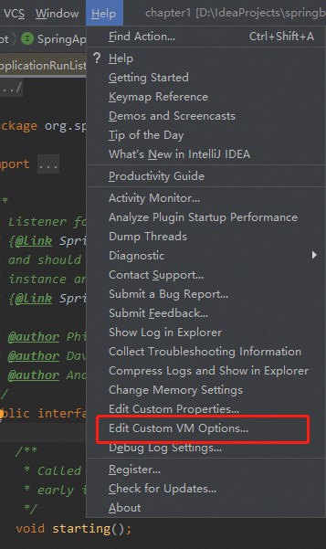
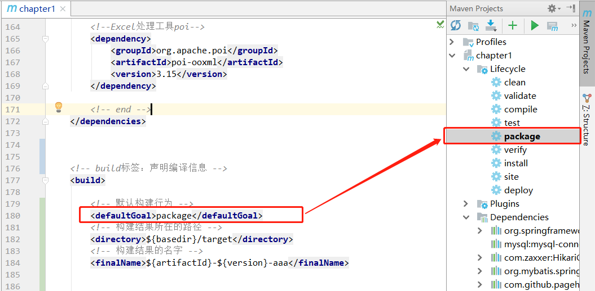

spring boot chapter6
Redis cluster performance test
1. 关于redis cluster？
redis cluster是解决redis可用性和可水平扩展的方案，它主要提供数据分片和主从备份。
2. 怎样在linux机器上部署redis cluster？
在6台机器上部署redis cluster架构的步骤如下：
一：Redis安装
1.下载，解压，安装，编译：
cd /usr/local
wget http://download.redis.io/releases/redis-5.0.3.tar.gz
tar xvzf redis-5.0.3.tar.gz
cd redis-5.0.3
make && make install # 编译后产生bin的目录，包含redis可执行文件
2.6个节点的redis-cluster目录如下：
├── redis-cluster
│ ├── 7001/redis.conf
│ ├── 7002/redis.conf
│ ├── 7003/redis.conf
│ ├── 7004/redis.conf
│ ├── 7005/redis.conf
│ └── 7006/redis.conf
3. 启动所有节点：
redis-server redis-cluster/7001/redis.conf
redis-server redis-cluster/7002/redis.conf
redis-server redis-cluster/7003/redis.conf
redis-server redis-cluster/7004/redis.conf
redis-server redis-cluster/7005/redis.conf
redis-server redis-cluster/7006/redis.conf
4. 关闭所有节点：
redis-cli -p 7001 shutdown
redis-cli -p 7002 shutdown
redis-cli -p 7003 shutdown
redis-cli -p 7004 shutdown
redis-cli -p 7005 shutdown
redis-cli -p 7006 shutdown
5. 连接所有节点：
redis-cli -h 119.23.181.11 -c -p 7001
redis-cli -h 119.23.181.12 -c -p 7002
redis-cli -h 119.23.181.13 -c -p 7003
redis-cli -h 119.23.181.14 -c -p 7004
redis-cli -h 119.23.181.15 -c -p 7005
redis-cli -h 119.23.181.16 -c -p 7006
6.使用redis-cli进行集群握手并分配槽：
redis-cli --cluster create 119.23.181.11:7001 119.23.181.12:7002 119.23.181.13:7003 119.23.181.14:7004 119.23.181.15:7005 119.23.181.16:7006 --cluster-replicas 1
如果你不想在master节点down的时候手动指定新的master，就最好配置sentinel监控节点运行情况，以保证故障自动转移：
7.启动3个redis sentinel：
redis-sentinel redis-cluster/26379/sentinel.conf
redis-sentinel redis-cluster/26380/sentinel.conf
redis-sentinel redis-cluster/26381/sentinel.conf
部署完成后效果如下所示：

其中redis数据节点和sentinel节点的配置文件如下：
